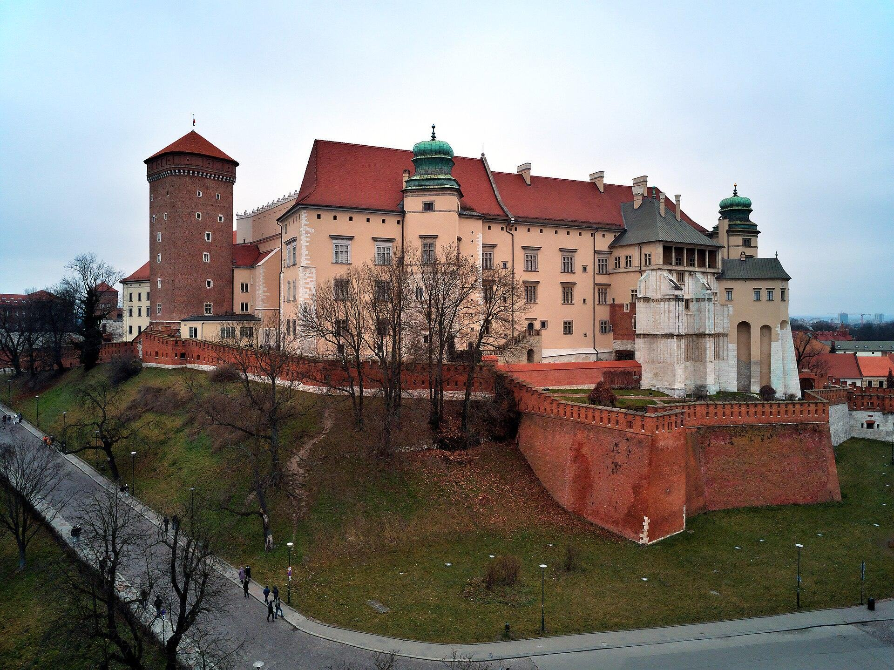
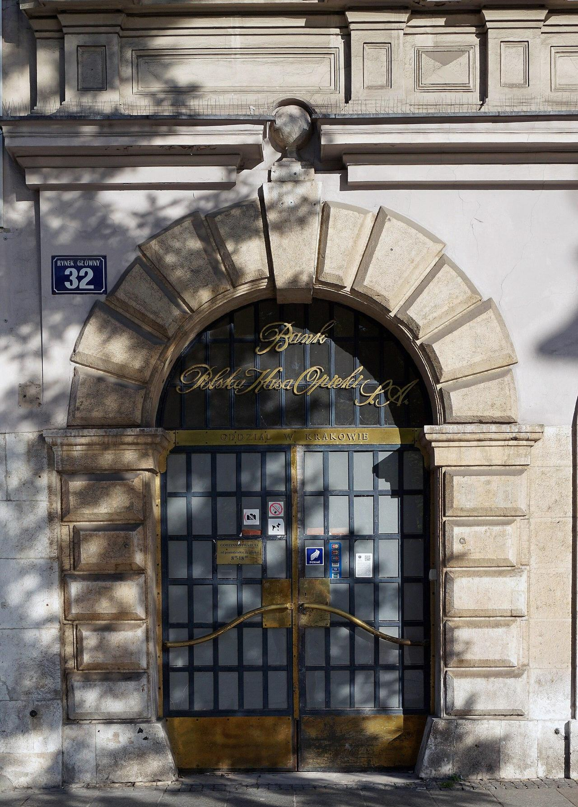

i.heneralova@gmail.com
Усі тексти і фото на сайті будуть ваші власні. Маршрути, ціни і відгуки тут лише для прикладу.
Кожен блок нижче клікабельний: це справжні сторінки цього демо. Кожна сторінка доступна трьома мовами.
Кожна екскурсія на окремій сторінці, тому Google показує вас за запитами «екскурсія Вавель українською», «wycieczka Kazimierz», «экскурсия Величка» тощо.
Українці, поляки і російськомовні туристи бачать сайт своєю мовою. Мова запам'ятовується на всіх сторінках.
Запит з екскурсією, датою і кількістю гостей приходить вам напряму, без комісій платформ.
Демо підготував Олексій, Krayon · krayon.site